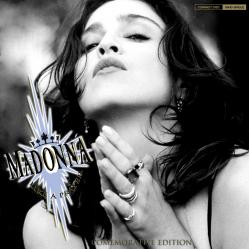

|  |
|
(Lyrics) Life is a mystery Everyone must stand alone I hear you call my name And it feels like home When you call my name It's like a little prayer I'm down on my knees I want to take you there In the midnight hour I can feel your power Just like a prayer You know, I'll take you there I hear your voice It's like an angel sighing I have no choice I hear your voice Feels like flying I close my eyes Oh God, I think I'm falling out of the sky I close my eyes, Heaven, help me When you call my name It's like a little prayer I'm down on my knees I want to take you there In the midnight hour I can feel your power Just like a prayer You know, I'll take you there Like a child you whisper softly to me You're in control Just like a child, now I'm dancing It's like a dream, no end and no beginning You're here with me It's like a dream Let the choir sing When you call my name It's like a little prayer I'm down on my knees I want to take you there In the midnight hour I can feel your power Just like a prayer You know, I'll take you there When you call my name It's like a little prayer I'm down on my knees I want to take you there In the midnight hour I can feel your power Just like a prayer You know, I'll take you there Life is a mystery Everyone must stand alone I hear you call my name And it feels like home Just like a prayer Your voice can take me there Just like a muse to me You are a mystery Just like a dream You are not what you seem Just like a prayer No choice your voice can take me there Just like a prayer, I'll take you there It's like a dream to me Just like a prayer, I'll take you there It's like a dream to me. (bis) Just like a prayer Your voice can take me there Just like a muse to me You are a mystery Just like a dream You are not what you seem Just like a prayer No choice your voice can take me there Just like a prayer Your voice can take me there Just like a muse to me You are a mystery Just like a dream You are not what you seem Just like a prayer No choice your voice can take me there Your voice can take me there |
(Letra en Español) La vida es un misterio, todo el mundo debe correr por su cuenta, te oigo decir mi nombre, y parece como un hogar. Cuando me llamas (dices mi nombre) es como una pequeña oración, estoy de rodillas, quiero llevarte allí, a la medianoche, puedo sentir tu poder, justo como una oración, sabes, te llevaré allí (a sentir eso). Oigo tu voz, es como un ángel suspirando, no tengo elección, oigo tu voz, me siento como volando, cierro los ojos, oh Dios, creo que estoy cayéndome del cielo, cierro los ojos, Cielo, ayúdame. Cuando me llamas, es como una pequeña oración, estoy de rodillas, quiero llevarte allí, a la medianoche, puedo sentir tu poder, justo como una oración, sabes, te llevaré allí. Como un niño, me susurras suavemente, tienes el control, como un niño, yo estoy bailando. Es como un sueño, no hay fin ni hay principio, tú estás aquí conmigo, es como un sueño, deja que cante el coro. Cuando me llamas, es como una pequeña oración, estoy de rodillas, quiero llevarte allí, a la medianoche, puedo sentir tu poder, justo como una oración, sabes, te llevaré allí. Cuando me llamas, es como una pequeña oración, estoy de rodillas, quiero llevarte allí, a la medianoche, puedo sentir tu poder, justo como una oración, sabes, te llevaré allí. La vida es un misterio, todo el mundo debe correr por su cuenta, te oigo decir mi nombre, y parece como un hogar. Justo como una oración, tu voz puede llevarme allí, justo como una musa para mí, eres un misterio. Justo como un sueño, no eres lo que pareces, justo como una oración, no hay elección, tu voz puede llevarme allí. Justo como una oración, te llevaré allí, es como un sueño para mí. Justo como una oración, te llevaré allí, es como un sueño para mí. (bis) Justo como una oración, tu voz puede llevarme allí, justo como una musa para mí, eres un misterio. Justo como un sueño, no eres lo que pareces, justo como una oración, no hay elección, tu voz puede llevarme allí. Justo como una oración, tu voz puede llevarme allí, justo como una musa para mí, eres un misterio. Justo como un sueño, no eres lo que pareces, justo como una oración, no hay elección, tu voz puede llevarme allí. Tu voz puede llevarme allí. |